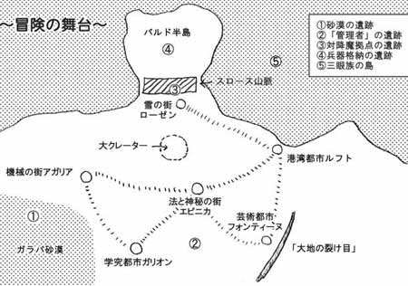

１０００年前に起こった「大崩壊」以後、荒廃しっきった世界において遺跡から発掘されるロストテクノロジーの産物を利用して人々は生活している。
人々はロステクと思われる謎の石柱の周りでしか安定した生活を送れないため今回舞台となる地域には６つの街しか存在しない。街の外には奇怪な生物が跋扈する荒野が広がっている。このため、街から街へ安全に移動するには確立されたルートを移動しなければならない。

○機械の街・アガリア
ＰＣ達の出発地点となる街。ジン、セラフィー、ヨセフはこの街の人間である。
○学究都市・ガリオン
学術団体アトラスのある研究都市。
○法と神秘の街・エピニカ
法教会の総本山がある宗教都市。
○港湾都市・ルフト
○芸術都市・フォンティーヌ
○雪の街・ローゼン
○法教会
エピニカに総本山を置く教会組織。法の神を唯一神として崇めている。世界の安定を第一に考えており、それを維持するために、表面上の教えとは別に、特殊部隊「法の爪」を持っている。
○学術団体“アトラス”
歴史の真実を求めて遺跡の調査や研究に明け暮れる学者たちの集団。
○ギルド
何でも屋支援団体。同業者同士の情報交換や依頼探しの場でもある。何でも屋はギルドへの登録が義務付けられている。
この世界には人間以外にも「三眼族」という知的種族が存在している。その名の通り、額に第３の目をもっているのだがそれ以外の外見的特長は人間とほぼ同じである。
三眼族の大きな特徴は、機械操作に優れている、という点だが、法教会による「三眼族大粛清」が行われた後は、その姿を見ることはほとんどなくなった。
○黒の月
通常の月とは別に空に浮かぶ真っ黒な天体。その軌道は不定で予測不可能。人々は黒の月を不吉なものとしてみています。
○スロース山脈
ローゼンの北方に位置する山脈。多くの遺跡が確認されている。
○バルド半島
スロース山脈の先にある未踏半島。海岸部は切り立った崖になっており海からの上陸は不可能。
○ガラパ砂漠
アガリア、ガリオン南部に広がる砂漠。
○“大地の裂け目”
フォンティーヌ近郊にある大クレバス。表面がクリスタル化している。
○大クレーター
「大崩壊」期に落ちてきた黒の月の欠片によってできたとされるクレーター。
前世界においては機械文明の発展と同時に魔道も発展を遂げていたが「大崩壊」以後廃れてしまい、現在ではおとぎ話として伝わっているのみである。
しかし、聖職者たちが起こす奇跡は魔道と同じ体系のものであり奇跡は魔法の一種であると言うことが出来る。ただし、法教会は奇跡と魔道は別物としている。